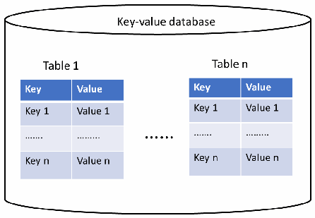
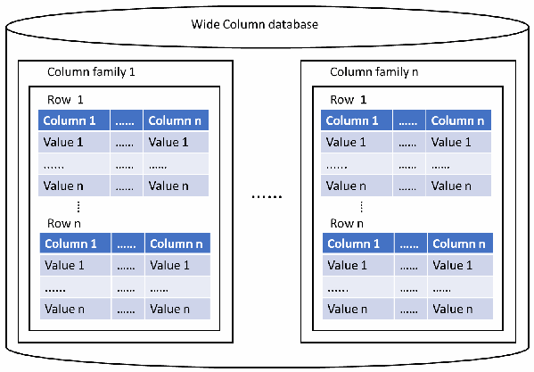
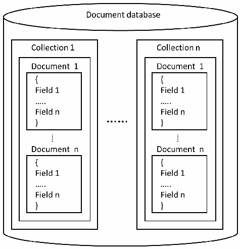
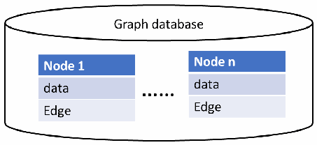
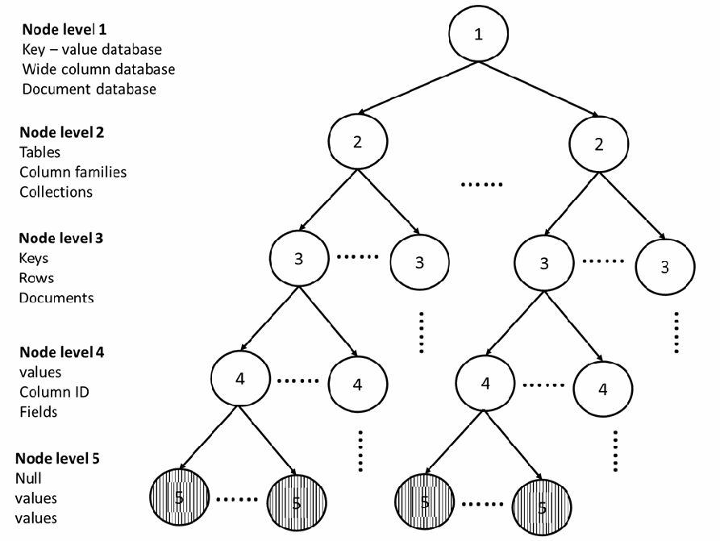
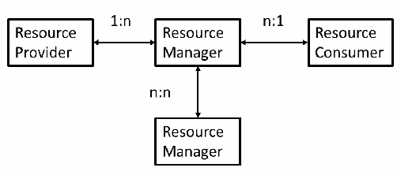
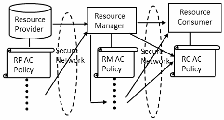

NIST IR 8504 日本語訳
英語タイトル : Access Control on NoSQL Databases日本語タイトル : NoSQL データベースにおけるアクセス制御
公開日 : 2024-05-07
原文URL : https://csrc.nist.gov/pubs/ir/8504/final
翻訳編集 : 自動生成（有志による非公式の日本語訳）, 原文取得日 : 2026-10-31, 訳文 : 270 / 271 ブロック
[要約] NIST IR 8504 は、NoSQL データベースシステムにおけるアクセス制御に焦点を当てた報告書です。NoSQL データベースは、データ分析の効率、システム性能、導入の容易さなどの面で従来の RDBMS を上回ることがよくある一方、特に脆弱な認可の仕組みを含め、データ保護に対する効果的なサポートが欠けていることによる脆弱性があるとされています。アクセス制御はあらゆるデータベース管理システム（DBMS）にとって基本的なデータ保護要件であるため、本書は NoSQL データベースの種類とアクセス制御モデルへの対応を示します。そのうえで、アクセス制御の観点からの考慮事項を説明します。
NIST Internal Report
NIST 内部報告書
NIST IR 8504
NIST IR 8504
Access Control on NoSQL Databases
NoSQL データベースにおけるアクセス制御
Vincent C. Hu
Vincent C. Hu
This publication is available free of charge from: https://doi.org/10.6028/NIST.IR.8504
本刊行物は次の場所から無料で入手できます: https://doi.org/10.6028/NIST.IR.8504
NIST Internal Report
NIST 内部報告書
NIST IR 8504
NIST IR 8504
Access Control on NoSQL Databases
NoSQL データベースにおけるアクセス制御
Vincent C. Hu Computer Security Division
Vincent C. Hu コンピューターセキュリティ部門
Information Technology Laboratory
情報技術研究所
This publication is available free of charge from: https://doi.org/10.6028/NIST.IR.8504
本刊行物は次の場所から無料で入手できます: https://doi.org/10.6028/NIST.IR.8504
May 2024
2024 年 5 月
［米国商務省の紋章。公的な標章のため、この非公式サイトには掲載していません。原本 PDF を参照してください。］
U.S. Department of Commerce Gina M. Raimondo, Secretary
米国商務省 Gina M. Raimondo 長官
National Institute of Standards and Technology
米国国立標準技術研究所
Laurie E. Locascio, NIST Director and Under Secretary of Commerce for Standards and Technology
Laurie E. Locascio, NIST Director and Under Secretary of Commerce for Standards and Technology
Certain equipment, instruments, software, or materials, commercial or non-commercial, are identified in this paper in order to specify the experimental procedure adequately. Such identification does not imply recommendation or endorsement of any product or service by NIST, nor does it imply that the materials or equipment identified are necessarily the best available for the purpose.
本稿では、実験手順を適切に示すために、特定の機器、計器、ソフトウェア、材料が、商用か非商用かを問わず挙げられています。このように挙げることは、NIST がいかなる製品やサービスも推奨または保証することを意味せず、また、挙げられた材料や機器がその目的に対して必ずしも最良であることを意味するものでもありません。
There may be references in this publication to other publications currently under development by NIST in accordance with its assigned statutory responsibilities. The information in this publication, including concepts and methodologies, may be used by federal agencies even before the completion of such companion publications. Thus, until each publication is completed, current requirements, guidelines, and procedures, where they exist, remain operative. For planning and transition purposes, federal agencies may wish to closely follow the development of these new publications by NIST.
本刊行物には、NIST が法定の責務に従って現在策定中のほかの刊行物への言及が含まれる場合があります。概念や方法論を含む本刊行物の情報は、そうした関連刊行物の完成前であっても、連邦政府機関が利用できます。したがって、各刊行物が完成するまでは、現行の要件、ガイドラインおよび手順が存在する場合には、引き続き有効です。計画および移行のため、連邦機関は、NIST によるこれらの新しい刊行物の策定状況を注意深く追うことを検討してもよいです。
Organizations are encouraged to review all draft publications during public comment periods and provide feedback to NIST. Many NIST cybersecurity publications, other than the ones noted above, are available at https://csrc.nist.gov/publications.
組織は、すべてのドラフト刊行物をパブリックコメント期間中に確認し、NIST にフィードバックを寄せることが推奨されています。上記で挙げたものを除き、NIST の多くのサイバーセキュリティ刊行物は https://csrc.nist.gov/publications で入手できます。
NIST Technical Series Policies
NIST 技術シリーズの方針
Copyright, Use, and Licensing Statements
著作権、使用、ライセンスに関する声明
NIST Technical Series Publication Identifier Syntax
NIST 技術シリーズ刊行物識別子の構文
Publication History
刊行の経緯
Approved by the NIST Editorial Review Board on 2024-05-01
2024-05-01 に NIST 編集審査委員会により承認
How to Cite this NIST Technical Series Publication:
本 NIST 技術シリーズ刊行物の引用方法:
Hu VC (2024) Access Control on NoSQL Databases. (National Institute of Standards and Technology, Gaithersburg, MD), NIST Interagency or Internal Report (IR) NIST IR 8504. https://doi.org/10.6028/NIST.IR.8504
Hu VC (2024) Access Control on NoSQL Databases. (National Institute of Standards and Technology, Gaithersburg, MD), NIST Interagency or Internal Report (IR) NIST IR 8504. https://doi.org/10.6028/NIST.IR.8504
Author ORCID iDs
著者の ORCID iD
Vincent C. Hu: 0000-0002-1648-0584
Vincent C. Hu: 0000-0002-1648-0584
Contact Information
連絡先
ir8504-comments@nist.gov
ir8504-comments@nist.gov
National Institute of Standards and Technology
Attn: Computer Security Division, Information Technology Laboratory
100 Bureau Drive (Mail Stop 8930) Gaithersburg, MD 20899-8930
National Institute of Standards and Technology
Attn: Computer Security Division, Information Technology Laboratory
100 Bureau Drive (Mail Stop 8930) Gaithersburg, MD 20899-8930
Additional Information
追加情報
Additional information about this publication is available at https://csrc.nist.gov/pubs/ir/8504/final, including related content, potential updates, and document history.
本刊行物に関する追加情報（関連コンテンツ、更新の可能性、文書の履歴を含む）は、https://csrc.nist.gov/pubs/ir/8504/final で入手できます。
All comments are subject to release under the Freedom of Information Act (FOIA).
寄せられたコメントはすべて、情報自由法（FOIA）に基づいて公開される場合があります。
Abstract
概要
NoSQL database systems and data stores often outperform traditional RDBMS in various aspects, such as data analysis efficiency, system performance, ease of deployment, flexibility/scalability of data management, and users’ availability. However, with an increasing number of people storing sensitive data in NoSQL databases, security issues have become critical concerns. NoSQL databases suffer from vulnerabilities, particularly due to the lack of effective support for data protection, including weak authorization mechanisms. As access control is a fundamental data protection requirement of any database management system DBMS, this document focuses on access control on NoSQL database systems.
NoSQL データベースシステムとデータストアは、データ分析の効率、システム性能、導入の容易さ、データ管理の柔軟性／拡張性、ユーザーの可用性など、さまざまな面で従来の RDBMS を上回ることがよくあります。しかし、機微なデータを NoSQL データベースに保存する人が増えるにつれ、セキュリティ問題が重大な懸念となっています。NoSQL データベースには、特に、脆弱な認可の仕組みを含め、データ保護に対する効果的なサポートが欠けていることによる脆弱性があります。アクセス制御はあらゆるデータベース管理システム（DBMS）にとって基本的なデータ保護要件であるため、本書では NoSQL データベースシステムにおけるアクセス制御に焦点を当てます。
Keywords
キーワード
access control; attribute-based access control; authorization; database systems; No-SQL; SQL.
access control; attribute-based access control; authorization; database systems; No-SQL; SQL.
Reports on Computer Systems Technology
コンピュータシステム技術に関する報告書
The Information Technology Laboratory (ITL) at the National Institute of Standards and Technology (NIST) promotes the U.S. economy and public welfare by providing technical leadership for the Nation’s measurement and standards infrastructure. ITL develops tests, test methods, reference data, proof of concept implementations, and technical analyses to advance the development and productive use of information technology. ITL’s responsibilities include the development of management, administrative, technical, and physical standards and guidelines for the cost-effective security and privacy of other than national security-related information in federal information systems.
国立標準技術研究所（NIST）の情報技術ラボラトリー（ITL）は、国の測定・標準のインフラに対する技術的リーダーシップを提供することで、米国の経済と公共の福祉を促進しています。ITL は、情報技術の発展と生産的な利用を進めるため、テスト、テスト方法、参照データ、概念実証の実装、技術的分析を開発しています。ITL の責務には、連邦情報システムにおける国家安全保障関連以外の情報について、そのセキュリティとプライバシーを費用対効果高く確保するための、管理上、運用上、技術上、物理上の標準およびガイドラインの策定が含まれます。
Patent Disclosure Notice
特許開示に関する通知
NOTICE: ITL has requested that holders of patent claims whose use may be required for compliance with the guidance or requirements of this publication disclose such patent claims to ITL. However, holders of patents are not obligated to respond to ITL calls for patents and ITL has not undertaken a patent search in order to identify which, if any, patents may apply to this publication.
通知: ITL は、本刊行物のガイダンスまたは要件への準拠に使用が必要となる可能性のある特許クレームの保有者に対し、当該特許クレームを ITL に開示するよう求めています。ただし、特許の保有者には ITL の特許募集に応じる義務はなく、ITL は、本刊行物に適用される特許があるかどうか、あるとすればどれかを特定するための特許調査を行っていません。
As of the date of publication and following call(s) for the identification of patent claims whose use may be required for compliance with the guidance or requirements of this publication, no such patent claims have been identified to ITL.
刊行日の時点で、本刊行物のガイダンスまたは要件への準拠に使用が必要となる可能性のある特許クレームの特定を求めた後も、そのような特許クレームは ITL に対して特定されていません。
No representation is made or implied by ITL that licenses are not required to avoid patent infringement in the use of this publication.
本刊行物の使用において特許侵害を避けるためにライセンスが不要であるとの表明を、ITL が行ったり示唆したりするものではありません。
Table of Contents
目次
List of Tables
表の一覧
List of Figures
図の一覧
Acknowledgments
謝辞
The author would like to express his thanks to Isabel Van Wyk and Jim Foti of NIST for their detailed editorial review of both the public comment version and the final publication.
著者は、公開コメント版と最終刊行版の両方について詳細な編集レビューを行ってくれた、NIST の Isabel Van Wyk と Jim Foti に感謝します。
Executive Summary
エグゼクティブサマリー
NoSQL stands for “not only SQL” or “non-SQL,” which typically refer to any non-relational database that stores data in a format other than relational tables. It shifts away from relational database management systems (RDBMS) for dealing with enormous and constantly growing data and infrastructure needs and increasingly uses the Web 3.0 framework for big data and real-time web applications, including handling unstructured data like documents, emails, and social media. NoSQL databases are particularly useful for managing unstructured or very large data objects stored across distributed and cooperating devices. Use cases for retrieving such data range from critical scenarios (e.g., storing financial data and healthcare records) to more casual applications (e.g., chat log data, video, and images, readings from smart devices). Major Web 2.0 companies have developed or adopted different flavors of NoSQL databases to meet their growing data and infrastructure needs.
NoSQL は「not only SQL」または「non-SQL」の略で、通常、リレーショナルテーブル以外の形式でデータを格納する、あらゆる非リレーショナルデータベースを指します。膨大で絶えず増え続けるデータとインフラのニーズに対応するため、リレーショナルデータベース管理システム（RDBMS）から離れつつあり、ビッグデータやリアルタイムのウェブアプリケーションのために Web 3.0 フレームワークを使用することも増えています。これには、文書、電子メール、ソーシャルメディアなどの非構造化データの取り扱いが含まれます。NoSQL データベースは、分散して連携するデバイスにまたがって格納される非構造化データや非常に大きなデータオブジェクトの管理に特に有用です。そのようなデータを取得するユースケースは、重要なシナリオ（金融データや医療記録の保存など）から、より日常的なアプリケーション（チャットログデータ、動画、画像、スマートデバイスの測定値など）まで及びます。主要な Web 2.0 企業は、増え続けるデータとインフラのニーズに対応するため、さまざまな種類の NoSQL データベースを開発または採用してきました。
NoSQL database systems and data stores often outperform traditional RDBMS in various aspects, such as data analysis efficiency, system performance, ease of deployment, flexibility/scalability of data management, and users’ availability. However, with an increasing number of people storing sensitive data in NoSQL databases, security issues have become critical concerns. NoSQL databases suffer from vulnerabilities, particularly due to the lack of effective support for data protection, including weak authorization mechanisms. As access control is a fundamental data protection requirement of any database management system (DBMS), this document discusses access control on NoSQL database systems by illustrating the NoSQL database types along with their support for access control models and describing considerations from the perspective of access control.
NoSQL データベースシステムとデータストアは、データ分析の効率、システム性能、導入の容易さ、データ管理の柔軟性／拡張性、ユーザーの利用可能性など、さまざまな面で従来の RDBMS を上回ることがよくあります。しかし、機微なデータを NoSQL データベースに保存する人が増えるにつれ、セキュリティ問題が重大な懸念となっています。NoSQL データベースには、特に、脆弱な認可の仕組みを含め、データ保護に対する効果的なサポートが欠けていることによる脆弱性があります。アクセス制御はあらゆるデータベース管理システム（DBMS）にとって基本的なデータ保護要件であるため、本書では、NoSQL データベースの種類とアクセス制御モデルへの対応を示し、アクセス制御の観点からの考慮事項を説明することで、NoSQL データベースシステムにおけるアクセス制御を論じます。
1. Introduction
1. はじめに
NoSQL stands for “not only SQL” or “non-SQL,” which typically refers to any non-relational database that stores data in a format other than relational tables. It emerged in the late 2000s, triggered by the growing popularity of distributed systems, such as cloud computing and big data, which required a shift away from relational databases (RDBMS) toward NoSQL databases. Organizations now deal with enormous and constantly growing data and infrastructure needs or increasingly use the Web 3.0 framework for big data and real-time web applications, including handling unstructured data like documents, emails, and social media [AA, NO].
NoSQL は「not only SQL」または「non-SQL」の略で、通常、リレーショナルテーブル以外の形式でデータを格納する、あらゆる非リレーショナルデータベースを指します。NoSQL は 2000 年代後半に登場しました。クラウドコンピューティングやビッグデータのような分散システムの人気の高まりが契機となり、リレーショナルデータベース（RDBMS）から NoSQL データベースへの移行が求められたためです。現在、組織は、膨大で絶えず増え続けるデータとインフラのニーズに対応しており、ビッグデータやリアルタイムのウェブアプリケーションのために Web 3.0 フレームワークを使用することも増えています。これには、文書、電子メール、ソーシャルメディアなどの非構造化データの取り扱いが含まれます [AA, NO]。
NoSQL databases are particularly useful for managing unstructured or very large data objects stored across distributed and cooperating devices. Use cases for retrieving such data range from critical scenarios (e.g., storing financial data and healthcare records) to more casual applications (e.g., chat log data, video, images, and readings from smart devices). Major Web 2.0 companies like Amazon (Dynamo), Google (BigTable), LinkedIn (Voldemort), and Facebook (Cassandra) have developed or adopted different flavors of NoSQL databases to meet their growing data and infrastructure needs. Their success has inspired many of today’s NoSQL applications [AA, CJ].
NoSQL データベースは、分散して連携するデバイスにまたがって格納される非構造化データや非常に大きなデータオブジェクトの管理に特に有用です。そのようなデータを取得するユースケースは、重要なシナリオ（金融データや医療記録の保存など）から、より日常的なアプリケーション（チャットログデータ、動画、画像、スマートデバイスの測定値など）まで及びます。Amazon（Dynamo）、Google（BigTable）、LinkedIn（Voldemort）、Facebook（Cassandra）といった主要な Web 2.0 企業は、増え続けるデータとインフラのニーズに対応するため、さまざまな種類の NoSQL データベースを開発または採用してきました。その成功は、今日の多くの NoSQL アプリケーションに影響を与えています [AA, CJ]。
NoSQL database systems and data stores often outperform traditional RDBMS in various aspects, such as data analysis efficiency, system performance, ease of deployment, flexibility/scalability of data management, and users’ availability. However, with an increasing number of people storing sensitive data in NoSQL databases, security issues have become critical concerns. NoSQL databases suffer from vulnerabilities, particularly due to the lack of effective support for data protection, including weak authorization mechanisms. As access control is a fundamental data protection requirement of any database management system (DBMS) [FF], this document discusses access control on NoSQL database systems by illustrating the NoSQL database types along with their support for access control models and describing considerations from the perspective of access control. Note that an access control system may store and manage access control data (e.g., subjects, objects, actions, and attributes) in external systems rather than the NoSQL database itself, which has a wide range of different implementations not discussed in this document.
NoSQL データベースシステムとデータストアは、データ分析の効率、システム性能、導入の容易さ、データ管理の柔軟性／拡張性、ユーザーの利用可能性など、さまざまな面で従来の RDBMS を上回ることがよくあります。しかし、機微なデータを NoSQL データベースに保存する人が増えるにつれ、セキュリティ問題が重大な懸念となっています。NoSQL データベースには、特に、脆弱な認可の仕組みを含め、データ保護に対する効果的なサポートが欠けていることによる脆弱性があります。アクセス制御はあらゆるデータベース管理システム（DBMS）にとって基本的なデータ保護要件であるため [FF]、本書では、NoSQL データベースの種類とアクセス制御モデルへの対応を示し、アクセス制御の観点からの考慮事項を説明することで、NoSQL データベースシステムにおけるアクセス制御を論じます。なお、アクセス制御システムは、アクセス制御データ（サブジェクト、オブジェクト、アクション、属性など）を NoSQL データベース自体ではなく外部のシステムに保存して管理する場合があります。NoSQL データベースには多岐にわたる実装があり、本書ではそれらを扱いません。
This document is organized as follows:
本書の構成は次のとおりです。
•Section 1 is the introduction,
•第 1 節は、はじめにです。
•Section 2 provides an overview of NoSQL database systems,
•第 2 節では、NoSQL データベースシステムの概要を示します。
•Section 3 introduces access control models for NoSQL database systems,
•第 3 節では、NoSQL データベースシステムのアクセス制御モデルを紹介します。
•Section 4 describes considerations for NoSQL systems from the perspective of access control.
•第 4 節では、アクセス制御の観点から、NoSQL システムの考慮事項を説明します。
•Section 5 is the conclusion,
•第 5 節は、結論です。
•References list articles referred by this document,
•参考文献に、本書が参照した論文を列挙します。
•Appendix A provides an example application of Graph model.
•付録 A では、グラフモデルの適用例を示します。
2. Overview of NoSQL Database Systems
2. NoSQL データベースシステムの概要
Applications in web services, e-commerce, mobile computing, and social media require storing and processing vast amounts of structured and unstructured data driven by the significant increase in global datasets known as “big data,” which includes data with high volume, velocity, and variety. However, handling such immense data becomes increasingly complicated in terms of processing and meeting users’ requirements, such as scalability, performance control, high availability, low latency, workload distribution, and managing big data applications [AA].
ウェブサービス、電子商取引、モバイルコンピューティング、ソーシャルメディアのアプリケーションでは、データ量、生成速度、多様性が大きいデータを含む「ビッグデータ」として知られる世界的なデータセットが大幅に増加していることを背景に、大量の構造化データと非構造化データを保存し、処理する必要があります。しかし、このような膨大なデータの取り扱いは、処理や、拡張性、性能制御、高可用性、低遅延、ワークロード分散といったユーザー要件への対応、さらにビッグデータアプリケーションの管理という点で、ますます複雑になっています [AA]。
Traditional RDBMSs often fall short when compared to NoSQL database systems, which utilize distributed and collaborative devices to store and retrieve data. NoSQL databases offer the flexibility to rapidly adapt to changes in the software stack and allow data to be distributed across multiple servers and regions in the cloud, scale out instead of scaling up, and intelligently geo-place data to optimize performance [MO].
従来の RDBMS は、データの保存と取得に分散して連携するデバイスを利用する NoSQL データベースシステムと比べて、不十分であることがよくあります。NoSQL データベースは、ソフトウェアスタックの変化に迅速に適応する柔軟性を備えており、データをクラウド上の複数のサーバーやリージョンに分散させたり、スケールアップではなくスケールアウトしたり、性能を最適化するためにデータを地理的に賢く配置したりできます [MO]。
2.1. Types of NoSQL Databases Systems
2.1. NoSQL データベースシステムの種類
In general, there are four major types of NoSQL models: key-value, document, wide-column, and graph databases.
一般に、NoSQL モデルには、キーバリュー、ドキュメント、ワイドカラム、グラフの各データベースという 4 つの主要な種類があります。
2.1.1. Key-Value Model
2.1.1. キーバリューモデル
The key-value model, as shown in Fig. 1, stores data in a schemaless form, making them simple, efficient, and powerful. In this model, each database item contains keys and corresponding values, similar to an RDBMS with only two columns (i.e., key and the value). Data can be efficiently retrieved by using a unique key, which serves as an index like a hash table. The values in a key-value NoSQL database can be simple data types, like strings and numbers, or complex objects [HI]. The key-value model is primarily used for caching, session management, and leaderboard applications [WT].
キーバリューモデルは、図 1 に示すように、データをスキーマレスの形式で保存するため、単純で効率的かつ強力です。このモデルでは、各データベース項目がキーと対応する値を含み、2 つの列（すなわちキーと値）だけを持つ RDBMS に似ています。データは、ハッシュテーブルのような索引として機能する一意のキーを使って、効率的に取得できます。キーバリュー NoSQL データベースの値は、文字列や数値などの単純なデータ型でも、複雑なオブジェクトでもかまいません [HI]。キーバリューモデルは、主にキャッシュ、セッション管理、リーダーボードのアプリケーションに使用されます [WT]。

キー・バリュー型データベースのモデル。「Key-value database」と書かれた円柱の中に Table 1 から Table n までの表があります。各表は Key と Value の2列で、行には Key 1 / Value 1 から Key n / Value n までがあります。
Fig. 1. Key-value database model
図 1. キーバリューデータベースモデル
2.1.2. Wide-Column Model
2.1.2. ワイドカラムモデル
The wide-column model, as shown in Fig. 2, stores data in tables, rows, and dynamic columns, similar to the key-value model. However, the key in this model is an integration of the row, column, and/or timestamp and refers to one or many columns as a "column family.” Each column family is equivalent to a table in an RDBMS, enabling analytics on a small number of columns for data mining and web applications. This design allows for more efficient data reading and retrieval with higher speed compared to traditional RDBMS [AA, HI]. It is well-suited for complex datasets and storing large amounts of data in distributed systems as it enables the easy addition of new columns by creating new files, eliminating the need to rebuild the entire table, as required in RDBMS [AA]. The model is usually optimized for specific use cases (e.g., Facebook’s Inbox search feature), allowing it to efficiently handle over 100 million users continuously using the system [OG]. Other popular use cases of the wide-column model include the Internet of Things (IoT), inventory management, and big data processing.
ワイドカラムモデルは、図 2 に示すように、キーバリューモデルと同様に、データをテーブル、行、動的な列に保存します。ただし、このモデルのキーは、行、列、および／またはタイムスタンプを統合したもので、「カラムファミリー」として 1 つまたは複数の列を参照します。各カラムファミリーは RDBMS のテーブルに相当し、データマイニングやウェブアプリケーションのために、少数の列に対する分析を可能にします。この設計により、従来の RDBMS と比べて、より効率的で高速なデータの読み取りと取得が可能になります [AA, HI]。RDBMS で必要となるテーブル全体の再構築が不要になり、新しいファイルを作成することで新しい列を簡単に追加できるため、複雑なデータセットや、分散システムでの大量データの保存に適しています [AA]。このモデルは通常、特定のユースケース（Facebook の受信箱検索機能など）に最適化されており、システムを継続的に使用する 1 億人超のユーザーを効率的に処理できます [OG]。ワイドカラムモデルのほかの一般的なユースケースには、モノのインターネット（IoT）、在庫管理、ビッグデータ処理があります。

ワイドカラム型データベースのモデルの図です。「Wide Column database」と書かれた円柱の中に Column family 1 から Column family n があります。各カラムファミリーは Row 1 から Row n を含み、各行は Column 1 …… Column n の列と、Value 1 …… Value 1 から Value n …… Value n までの値を持つ表です。
Fig. 2. Wide-column database model
図 2. ワイドカラムデータベースモデル
2.1.3. Document Model
2.1.3. ドキュメントモデル
The document model, as shown in Fig. 3, stores data in documents, similar to JSON, BSON, and XML documents. In this model, data is organized into collections with a unique key that serves as an index for fast querying. A collection contains documents without a schema. Rather, each document contains pairs of fields and values of various types, such as strings, numbers, Booleans, arrays, and others. The data within documents can include structured data, semi-structured data (e.g., XML files), or unstructured data (e.g., text), which allows for a dynamic structure and the easy modification, addition, or deletion of fields. This flexibility allows documents to be stored and retrieved in a form that closely resembles the data objects used in applications, reducing the need for data translation during application use [HI] and contributing to high performance and horizontal scalability. This model has applications in blog software, content management systems [AA], and product catalogs, big data, and analytics [WT].
ドキュメントモデルは、図 3 に示すように、JSON、BSON、XML 文書に似た、ドキュメントにデータを保存します。このモデルでは、データは、高速なクエリのための索引として機能する一意のキーを持つコレクションに整理されます。コレクションには、スキーマのないドキュメントが含まれます。むしろ、各ドキュメントには、文字列、数値、ブール値、配列などのさまざまな型のフィールドと値のペアが含まれます。ドキュメント内のデータには、構造化データ、半構造化データ（XML ファイルなど）、非構造化データ（テキストなど）を含めることができるため、動的な構造と、フィールドの容易な変更、追加、削除が可能です。この柔軟性により、アプリケーションで使用されるデータオブジェクトに非常に近い形でドキュメントを保存・取得でき、アプリケーションの使用中のデータ変換の必要性が減り [HI]、高い性能と水平スケーラビリティに寄与します。このモデルは、ブログソフトウェア、コンテンツ管理システム [AA]、製品カタログ、ビッグデータ、分析に応用されています [WT]。

ドキュメント型データベースのモデルの図です。「Document database」と書かれた円柱の中に Collection 1 から Collection n があります。各コレクションは Document 1 から Document n を含み、各ドキュメントは波括弧で囲んだ Field 1 ….. Field n を持ちます。
Fig. 3. Document database model
図 3. ドキュメントデータベースモデル
2.1.4. Graph Model
2.1.4. グラフモデル
The graph model, as shown in Fig. 4, represents and stores data based on relationships. It is a schemaless model, and data is structured using nodes and edges. Nodes typically store data entities, while edges represent the relationships or links between the data nodes. The model is scalable but complex as it often utilizes shortest path algorithms to optimize data queries for real-time results. In this model, the efficiency of a query depends on the number of relationships among the nodes [HI]. Graph-based databases have various applications, such as recommendation systems, social networking, identity and access management (IAM), and content management [AA WT].
グラフモデルは、図 4 に示すように、関係に基づいてデータを表現し、保存します。スキーマレスのモデルで、データはノードとエッジを用いて構造化されます。ノードは通常データのエンティティを保存し、エッジはデータノード間の関係またはリンクを表します。このモデルは拡張性がありますが、リアルタイムの結果を得るためにデータのクエリを最適化する最短経路アルゴリズムを利用することが多いため、複雑です。このモデルでは、クエリの効率はノード間の関係の数に依存します [HI]。グラフベースのデータベースには、レコメンデーションシステム、ソーシャルネットワーキング、アイデンティティおよびアクセス管理（IAM）、コンテンツ管理など、さまざまな用途があります [AA WT]。

グラフ型データベースのモデルの図です。「Graph database」と書かれた円柱の中に Node 1 …… Node n があり、各ノードは data と Edge の2つの項目を持ちます。
Fig. 4. Graph database model
図 4. グラフデータベースモデル
2.2. Features of NoSQL Database Systems
2.2. NoSQL データベースシステムの特徴
NoSQL databases offer flexible and simple data models, horizontal scalability, and fast (i.e., primitive) queries, as well as security deficiencies [MO]. Table 1 compares the features of RDBMS with those of NoSQL databases [AH, SL].
NoSQL データベースは、柔軟で単純なデータモデル、水平スケーラビリティ、高速な（すなわち基本的な）クエリを提供しますが、セキュリティ上の欠陥もあります [MO]。表 1 は、RDBMS と NoSQL データベースの機能を比較したものです [AH, SL]。
Table 1. Comparison of RDBMS and NoSQL features
表 1. RDBMS と NoSQL の機能の比較
| Database Model | RDBMS | NoSQL |
|---|---|---|
| Database | Relational | Non-relational |
| Scheme | Fixed and structured | Dynamic and unstructured |
| Queries | Complex queries using JOIN | Unsupported |
| Scalable | Vertical | Horizontal |
| Properties | Atomicity, consistency, isolation, and durability (ACID) | Consistency (eventually), availability, partial tolerance (CAP) |
| データベースモデル | RDBMS | NoSQL |
|---|---|---|
| データベース | リレーショナル | 非リレーショナル |
| スキーマ | 固定的で構造化されている | 動的で非構造化である |
| クエリ | JOIN を使用する複雑なクエリ | サポートされない |
| スケーラビリティ | 垂直 | 水平 |
| 特性 | 原子性、一貫性、分離性、永続性（ACID） | （最終的な）一貫性、可用性、分断耐性（CAP） |
2.2.1. Flexible Data Model
2.2.1. 柔軟なデータモデル
NoSQL databases provide flexible schemas that enable easy database changes and seamless integration with database applications. For example, in document-based systems, documents do not need to follow the same schema, which allows for faster creation and maintenance of documents with minimal overhead.
NoSQL データベースは、データベースの変更を容易にし、データベースアプリケーションとのシームレスな統合を可能にする、柔軟なスキーマを提供します。たとえば、ドキュメントベースのシステムでは、ドキュメントが同じスキーマに従う必要がないため、最小限のオーバーヘッドで、ドキュメントをより速く作成・保守できます。
2.2.2. Horizontal Scalability
2.2.2. 水平スケーラビリティ
NoSQL databases support horizontal scaling, which means that they handle increased capacity by distributing data across multiple servers, thus avoiding the need to migrate to a larger server when capacity exceeds the requirements of the current server. NoSQL key-value systems have a simple structure with only two columns (i.e., key and the value), enabling horizontal scaling without the need for complex field joins. Similarly, wide-column systems can handle more complex data structures by adding new columns through the creation of a new file.
NoSQL データベースは水平スケーリングをサポートしており、複数のサーバーにデータを分散させることで容量の増加に対応するため、容量が現在のサーバーの要件を超えた場合により大きなサーバーに移行する必要がありません。NoSQL のキーバリューシステムは 2 つの列（すなわちキーと値）だけの単純な構造を持つため、複雑なフィールド結合を必要とせずに水平スケーリングができます。同様に、ワイドカラムシステムは、新しいファイルを作成して新しい列を追加することで、より複雑なデータ構造を扱えます。
2.2.3. Fast Queries
2.2.3. 高速なクエリ
NoSQL databases store data in a way that optimizes queries by utilizing simple and efficient (i.e., primitive) query language [OG] without the need for join operations that can degrade query performance in typically normalized DBMS using SQL. For example, in document systems with open formats like XML and JSON, building a document does not require foreign keys. This allows for dynamic relationships between documents, making them independent of each other. Wide-column systems are also designed for efficient data reading and retrieval, resulting in better performance [HI].
NoSQL データベースは、SQL を使用する典型的な正規化された DBMS でクエリ性能を低下させる可能性のある結合操作を必要とせず、単純で効率的な（すなわち基本的な）クエリ言語 [OG] を利用して、クエリが最適化されるようにデータを保存します。たとえば、XML や JSON のようなオープンな形式を持つドキュメントシステムでは、ドキュメントの構築に外部キーを必要としません。これにより、ドキュメント間の動的な関係が可能になり、ドキュメントが互いに独立します。ワイドカラムシステムも、効率的なデータの読み取りと取得のために設計されており、より良い性能につながります [HI]。
2.2.4. Security Deficiencies
2.2.4. セキュリティ上の不備
Despite their advantages, NoSQL databases lack a mechanism for handling and managing data consistency and maintaining integrity constraints (e.g., using foreign keys). Additionally, they often have limited support for security at the database level [OG].
NoSQL データベースは、その利点にもかかわらず、データの一貫性を扱い管理し、（外部キーを使用するなどして）完全性制約を維持する仕組みを欠いています。さらに、データベースレベルでのセキュリティのサポートも限られていることがよくあります [OG]。
3. Access Control Model on NoSQL Database Systems
3. NoSQL データベースシステムにおけるアクセス制御モデル
This section illustrates how to apply access control properties on NoSQL models assuming that the access control system stores and manage access control data (e.g., subjects, objects, and attributes) in the NoSQL database.
本節では、アクセス制御システムが、アクセス制御データ（サブジェクト、オブジェクト、属性など）を NoSQL データベースに保存して管理することを前提に、NoSQL モデルにアクセス制御の特性を適用する方法を説明します。
3.1. Relationship Structures of NoSQL Models
3.1. NoSQL モデルの関係構造
Schemaless relationships between NoSQL data can be constructed using hierarchical structures. The key-value, wide-column, and document models can be represented in a tree data structure, as shown in Fig. 5, with a maximum of five tree levels if the NoSQL database itself is represented at the first (i.e., root) level.
NoSQL データ間のスキーマレスな関係は、階層構造を用いて構築できます。キーバリュー、ワイドカラム、ドキュメントの各モデルは、NoSQL データベース自体を第 1 層（すなわちルート）に置いた場合、図 5 に示すように、最大 5 層のツリーデータ構造で表現できます。

ノードの階層を表す木構造の図です。左側の見出しは、Node level 1: Key – value database、Wide column database、Document database、Node level 2: Tables、Column families、Collections、Node level 3: Keys、Rows、Documents、Node level 4: values、Column ID、Fields、Node level 5: Null、values、values です。右側では、根のノード1がノード2 …… 2に分かれ、各ノード2がノード3 …… 3に、各ノード3がノード4 …… 4に、各ノード4が網掛けの葉ノード5 …… 5に分かれます。縦の点線はさらに枝があることを示します。
Fig. 5. Hierarchical structure relationships of the key-value, wide-column, and document models
図 5. キーバリュー、ワイドカラム、ドキュメントの各モデルの階層構造の関係
Nodes in the second tree level represent the Tables, Column families, and Collections for key-value, wide-column, and document models, respectively. Nodes in the third tree level represent the data that can be indexed from the nodes in the second tree level, which are Key, Rows, and Documents for the key-value, wide-column, and document models, respectively. Nodes in the fourth tree level represent the data that can be indexed from nodes in the third tree level, which are values, Column IDs, and Fields for the key-value, wide-column, and document models, respectively. Nodes in the fifth tree level represent the data that can be indexed from nodes in the fourth tree level. There is no offspring on this level for the key-value model. It is essential to consider these hierarchical structures when designing access control on NoSQL databases to effectively leverage their schemaless nature and optimize data access.
ツリーの第 2 層のノードは、キーバリュー、ワイドカラム、ドキュメントの各モデルで、それぞれテーブル、カラムファミリー、コレクションを表します。ツリーの第 3 層のノードは、第 2 層のノードから索引付けできるデータを表し、キーバリュー、ワイドカラム、ドキュメントの各モデルで、それぞれキー、行、ドキュメントです。ツリーの第 4 層のノードは、第 3 層のノードから索引付けできるデータを表し、キーバリュー、ワイドカラム、ドキュメントの各モデルで、それぞれ値、列 ID、フィールドです。ツリーの第 5 層のノードは、第 4 層のノードから索引付けできるデータを表します。キーバリューモデルでは、この層に子孫はありません。NoSQL データベースのアクセス制御を設計する際には、スキーマレスという性質を効果的に活用し、データアクセスを最適化するために、これらの階層構造を考慮することが重要です。
Unlike hierarchical tree structures, the relationship structure of the graph model is represented by a directed graph, as shown in Fig. 6.
階層的なツリー構造とは異なり、グラフモデルの関係構造は、図 6 に示すように有向グラフで表現されます。
![Directed graph of nodes. On the left, node 1 has solid arrows to nodes 2 and 3 (with … between them), and node 2 has dashed arrows to two nodes x (with … between them). On the right, after "……", a node x has solid arrows to two nodes x, one of which has dashed arrows to two further nodes x. Every node is drawn with incoming and outgoing edges marked with vertical dots, and vertical dots below some nodes indicate more nodes. Legend: Node (a circle x); Edges (an arrow); Edge to some nodes; Edge from some nodes.](assets/ir-8504/p0017-figure-01.png)
ノードの有向グラフの図です。左側では、ノード1からノード2とノード3（間に …）へ実線の矢印が出ており、ノード2から2つのノードx（間に …）へ破線の矢印が出ています。右側では「……」の後に、ノードxから2つのノードxへ実線の矢印が出ており、その一方からさらに2つのノードxへ破線の矢印が出ています。各ノードには、縦の点を添えた入る辺と出る辺が描かれ、いくつかのノードの下の縦の点はさらにノードがあることを示します。凡例は、Node（x の円）、Edges（矢印）、Edge to some nodes、Edge from some nodes です。
Fig. 6. Directed graph relationship structure of the graph model
図 6. グラフモデルの有向グラフ関係構造
In this model, each node can have more than one edge, which represent the connections or relationships between nodes in the graph. The directed graph allows for complex and interconnected data relationships, making it ideal for applications in which data connections and dependencies are critical to the analysis and processing of information.
このモデルでは、各ノードが複数のエッジを持つことができ、エッジはグラフ内のノード間の接続または関係を表します。有向グラフは、複雑で相互接続されたデータの関係を可能にするため、データの接続と依存関係が情報の分析と処理に不可欠なアプリケーションに理想的です。
3.2. Access Control Rules from NoSQL Relationship Structures
3.2. NoSQL の関係構造から導かれるアクセス制御ルール
Enforcing access control policies — especially for fine-grained access control on schemaless NoSQL databases with data relationships in heterogeneous structures — presents challenges due to the absence of a reference data model and related manipulation language. This exacerbates the enforcement of access control policies on the protected data [CF]. Additionally, managing access control on NoSQL databases is not as straightforward as it is for RDBMSs, making it challenging to query “who can access what” in a straightforward manner. However, any static access control policy model based on subjects and object attributes can still be applied to NoSQL databases. The following sections describe how access control rules can be specified by attributes in the relationship structures for each of the NoSQL models presented in Sec. 3.1.
特に、異種の構造でデータの関係を持つスキーマレスな NoSQL データベースでのきめ細かいアクセス制御に関して、アクセス制御ポリシーの実施は、参照用データモデルと関連する操作言語がないため困難です。このことは、保護対象データに対するアクセス制御ポリシーの実施をさらに困難にします [CF]。さらに、NoSQL データベースでのアクセス制御の管理は、RDBMS の場合ほど単純ではないため、「誰が何にアクセスできるか」を容易に照会することが難しくなります。ただし、サブジェクトとオブジェクトの属性に基づく静的なアクセス制御ポリシーモデルであれば、NoSQL データベースにも適用できます。以下の各項では、3.1 節で示した NoSQL の各モデルの関係構造において、属性によってアクセス制御ルールをどのように規定できるかを説明します。
3.2.1. Key-Value Model
3.2.1. キーバリューモデル
In the key-value model, a subject’s attributes can be specified through the link relationships from level 2 notes to level 3 nodes, as illustrated in Fig. 7.
キーバリューモデルでは、図 7 に示すように、第 2 層のノードから第 3 層のノードへのリンク関係を通じて、サブジェクトの属性を規定できます。

キー・バリュー型モデルの例の図です。根のノード「Key-value database」の下に department z と company h（間に ……）があります。department z の下に group y と別のノード、company h の下に別のノードと branch g があります。group y の下に user x と別のノード、branch g の下に別のノードと file f があります。破線の囲みで、department z と group y を「Subject attributes」、company h と branch g を「Object attributes」、user のノード群を「Subjects」、file のノード群を「Objects」としています。
Fig. 7. Example of defining subject and object attributes for the key-value model
図 7. キーバリューモデルにおけるサブジェクト属性とオブジェクト属性の定義例
For example, a subject and its attributes can be specified as x (Value user), y (Key group), and z (Table department). Similarly, an object and its attributes can be specified as f (Value file), g (Key branch), and h (Table company). Based on these attributes, an access control policy rule can be created to state that “user x in group y of department z can read file f managed by branch g of company h” using the relationships of the nodes. It is not necessary to include all levels of nodes except for the leaf to form a policy rule, but at least one node is required for a rule, such as “user x in group y can access objects managed by branch h.”
たとえば、サブジェクトとその属性は、x（Value のユーザー）、y（Key のグループ）、z（Table の部門）として規定できます。同様に、オブジェクトとその属性は、f（Value のファイル）、g（Key のブランチ）、h（Table の会社）として規定できます。これらの属性に基づき、ノードの関係を用いて、「部門 z のグループ y のユーザー x は、会社 h のブランチ g が管理するファイル f を読み取れる」というアクセス制御ポリシールールを作成できます。ポリシールールを構成するために、葉を除くすべての層のノードを含める必要はありませんが、ルールには少なくとも 1 つのノードが必要です。たとえば、「グループ y のユーザー x は、ブランチ h が管理するオブジェクトにアクセスできる」といったルールです。
3.2.2. Wide-Column and Document Models
3.2.2. ワイドカラムモデルとドキュメントモデル
In wide-column and document models, the attributes of subjects can be specified through any link from level 2 through level 4 nodes or just one node, as shown in Fig. 8.
ワイドカラムモデルとドキュメントモデルでは、図 8 に示すように、第 2 層から第 4 層のノードへの任意のリンク、またはただ 1 つのノードを通じて、サブジェクトの属性を規定できます。
![Wide-column or document model example. The root node "Wide-column or Document database" has children organization z and Company i (with …… between). organization z leads to department y, which leads to group x, which leads to user w; Company i leads to division h, which leads to branch g, which leads to file f. Other sibling nodes are shown empty with … and vertical dots. Dashed outlines group organization z, department y, and group x as "Subject attributes"; Company i, division h, and branch g as "Object attributes"; the user nodes as "Subjects"; and the file nodes as "Objects".](assets/ir-8504/p0019-figure-01.png)
ワイドカラム型またはドキュメント型モデルの例です。根のノード「Wide-column or Document database」の子として organization z と Company i があり（その間には省略されたノードがあります）。organization z から department y、group x、user w へ、Company i から division h、branch g、file f へとつながります。ほかの兄弟ノードは空の円と … や縦の点で示されています。破線の囲みで、organization z・department y・group x を「Subject attributes」、Company i・division h・branch g を「Object attributes」、user のノード群を「Subjects」、file のノード群を「Objects」としています。
Fig. 8. Example of defining subject and object attributes for wide-column and document models
図 8. ワイドカラムモデルとドキュメントモデルにおけるサブジェクト属性とオブジェクト属性の定義例
For example, a subject and its attributes can be specified as w (Value user), x (Column ID group), y (Row department), and z (Column family organization) for the wide-column model. Similarly, a subject and its attributes can be described as w (Value user), x (Field group), y (Document department), and z (Collection company) for the document model. An object and its attributes can be specified as f (Value file), g (Column-ID branch), h (Row division), and j (Column family company) for the wide-column model. For the Document model, an object and its attributes can be specified as f (Value file), g (Field branch), h (Document division), and j (Collection company). Thus, access control based on attributes for the Wide-column model can be represented as follows: “The user w in group x of department y in company z can read file f managed by branch g that belongs to division h in company j.” Similar access control rules can be specified for the document model. In both models, an access control rule can be specified using only one node (i.e., attribute) without linking to the next level of nodes. This implies that the lower-level attributes inherit access permissions from the attributes above them. For example, “Any users in group x can read objects that belong to division h.”
たとえば、ワイドカラムモデルでは、サブジェクトとその属性を、w（Value user）、x（Column ID group）、y（Row department）、z（Column family organization）として規定できます。同様に、ドキュメントモデルでは、サブジェクトとその属性を、w（Value user）、x（Field group）、y（Document department）、z（Collection company）として記述できます。ワイドカラムモデルでは、オブジェクトとその属性を、f（Value file）、g（Column-ID branch）、h（Row division）、j（Column family company）として規定できます。ドキュメントモデルでは、オブジェクトとその属性を、f（Value file）、g（Field branch）、h（Document division）、j（Collection company）として規定できます。したがって、ワイドカラムモデルにおける属性に基づくアクセス制御は、次のように表現できます。「会社 z の部門 y のグループ x に属するユーザー w は、会社 j の部門 h に属するブランチ g が管理するファイル f を読み取れます」。ドキュメントモデルについても、同様のアクセス制御ルールを規定できます。どちらのモデルでも、次の層のノードにリンクせず、1 つのノード（すなわち属性）だけを使ってアクセス制御ルールを規定できます。これは、下位の層の属性が、その上位の属性からアクセス許可を継承することを意味します。たとえば、「グループ x のすべてのユーザーは、部門 h に属するオブジェクトを読み取れます」といったルールです。
In summary, an access control policy can be formally specified as a tuple with a finite number of elements in a set: {database, non-tree nodes of attributes for subjects, leaf node for the subject (optional), non-tree nodes of attributes for objects, leaf node for the object (optional), actions, permission} for key-value, wide-column, and document models. Due to the limitations of models based on node hierarchies, accessing data at the finest granularity level of the original data resources becomes a challenge. For example, in wide-column databases, data has to be organized within a collection in Column IDs. In document databases, data is typically stored within Fields. However, there may be situations in which finer-grained access control is required at a level beyond what the existing node structures can support, leading to a need for more attributes in access control rules. In such cases, it becomes necessary to construct tree branches horizontally to accommodate additional attributes. This approach adds complexity to the implementation of the database system and can be challenging to manage effectively. Such a lack of inherent support for fine-grained access control may require developers to find creative solutions to achieve the desired level of access granularity, potentially leading to more complex and less straightforward implementations. In addition to attributes for attribute-based access control, role-based access control (RBAC) can also be implemented by assigning a layer of nodes as roles.
要約すると、キーバリュー、ワイドカラム、ドキュメントの各モデルでは、アクセス制御ポリシーを、集合内の有限個の要素から成るタプル {データベース、サブジェクトの属性の非ツリーノード、サブジェクトの葉ノード（任意）、オブジェクトの属性の非ツリーノード、オブジェクトの葉ノード（任意）、アクション、許可} として形式的に規定できます。ノード階層に基づくモデルの制約のため、元のデータリソースの最も細かい粒度でデータにアクセスすることは課題となります。たとえば、ワイドカラムデータベースでは、データはコレクション内で Column ID ごとに整理する必要があります。ドキュメントデータベースでは、データは通常 Field 内に保存されます。しかし、既存のノード構造がサポートできる水準を超えた、より細かいアクセス制御が必要になる状況があり、アクセス制御ルールに、より多くの属性が必要になります。そのような場合、追加の属性に対応するために、ツリーの枝を水平方向に構築する必要が生じます。この方法はデータベースシステムの実装に複雑さを加え、効果的に管理することが困難になる場合があります。このようにきめ細かいアクセス制御の固有のサポートが欠けていると、開発者は、望ましいアクセスの粒度を達成するために工夫した解決策を見つける必要が生じる場合があり、実装がより複雑でわかりにくいものになる可能性があります。属性ベースのアクセス制御のための属性に加えて、ノードの層をロールとして割り当てることで、ロールベースアクセス制御（RBAC）も実装できます。
3.2.3. Graph Model
3.2.3. グラフモデル
Attributes in the graph model can be constructed differently since Graph edges do not necessarily have hierarchical relationships between nodes. Instead, edges connected by nodes may form cyclic relationships rather than a tree structure. As shown in Fig. 9, attributes in a graph database can be described through a sequence of edges and/or nodes without hierarchical relationships.
グラフモデルでは、グラフのエッジがノード間の階層的な関係を必ずしも持つわけではないため、属性を異なる方法で構築できます。むしろ、ノードで接続されたエッジは、ツリー構造ではなく循環的な関係を形成する場合があります。図 9 に示すように、グラフデータベースの属性は、階層的な関係を持たないエッジやノードの並びを通じて記述できます。
![Graph model example. user x is linked by an edge "in" to group y, which is linked by a dashed edge "works for" to company z; a dashed outline groups user x, group y, and company z as "Subject attributes". On the right, file f is linked by "Managed by" to department d, which is linked by "Belongs to" to organization o; a dashed outline groups them as "Object attributes". Other nodes with incoming and outgoing edges are shown with … and vertical dots. Legend: Node (circle); Edges (arrow); Edge to some nodes; Edge from some nodes.](assets/ir-8504/p0020-figure-01.png)
グラフ型モデルの例の図です。user x から「in」の辺で group y へ、group y から破線の「works for」の辺で company z へつながり、この3つが破線で「Subject attributes」として囲まれています。右側では file f から「Managed by」で department d へ、department d から「Belongs to」で organization o へつながり、破線で「Object attributes」として囲まれています。ほかのノードは入る辺・出る辺とともに … や縦の点で示されています。凡例は、Node（円）、Edges（矢印）、Edge to some nodes、Edge from some nodes です。
Fig. 9. Example of defining subject and object attributes for a graph model
図 9. グラフモデルにおけるサブジェクト属性とオブジェクト属性の定義例
For example, a subject attribute can be described as user x (node) in (edge) group y (node) works for (edge) company z (node), and an object attribute can be described as file f (node) managed by (edge) department d (node) belongs to (edge) organization o (node). An access control policy based on attributes can then be specified, such as “the user x in group y who works for company z can read file f managed by department d that belongs to organization o,” or “any users in company z can read objects that belong to organization o” if only applied to attributes without specific subjects or objects.
たとえば、サブジェクトの属性は、ユーザー x（ノード）が（エッジ）グループ y（ノード）に属し、（エッジ）会社 z（ノード）で働く、と記述でき、オブジェクトの属性は、ファイル f（ノード）が（エッジ）部門 d（ノード）によって管理され、（エッジ）組織 o（ノード）に属する、と記述できます。そのうえで、属性に基づくアクセス制御ポリシーを規定できます。たとえば、「会社 z で働くグループ y のユーザー x は、組織 o に属する部門 d が管理するファイル f を読み取ってもよいです」、または、特定のサブジェクトやオブジェクトなしに属性にのみ適用する場合は、「会社 z のすべてのユーザーは、組織 o に属するオブジェクトを読み取ってもよいです」といったものです。
Edges in the graph model are flexible and can be used to implement either an attribute or a permitted action in an access control rule. If implemented as a permitted action, the access control rule can be directly embedded in the database, treating a sequence of links as a rule. In other words, there is no need to store the access control rule outside of the database. An example graph in Fig. 10 contains the following nodes and edges: user x (node) in (edge directed to group y node) can read (edge directed to file y node).
グラフモデルのエッジは柔軟で、アクセス制御ルールにおける属性または許可されたアクションのいずれかを実装するために使用できます。許可されたアクションとして実装する場合、リンクの並びをルールとして扱うことで、アクセス制御ルールをデータベースに直接埋め込むことができます。言い換えると、アクセス制御ルールをデータベースの外部に保存する必要はありません。図 10 のグラフの例には、次のノードとエッジが含まれています。ユーザー x（ノード）が（グループ y のノードに向かうエッジ）でグループ y に属し、（ファイル y のノードに向かうエッジ）でファイル y を読み取れます。

アクセス制御規則を埋め込んだグラフの図です。user x、group y、file f、organization o のノードが横に並び、user x から「in」で group y へ、group y から「can read」（「action」と書かれた破線の円）で file f へ、file f から「Belongs to」で organization o へつながります。破線の囲みで、user x と group y を「subject attribute」、file f と organization o を「object attribute」、全体を「access control rule」としています。各ノードには … で示したほかの辺があります。
Fig. 10. Example of defining subject and object attributes for graph models using edges for permitted actions to embed an access control policy
図 10. アクセス制御ポリシーを組み込むために、許可されたアクションのエッジを用いたグラフモデルにおけるサブジェクト属性とオブジェクト属性の定義例
Unlike the key-value, wide-column, and document models, the graph model does not have limitations on the number of edges and nodes connected in a sequence of relationships when constructing attributes for subjects and objects. The graph model allows access to data at the finest possible granularity that matches the original data resource thanks to the unlimited extension of the graph topology. Consequently, when composing access control rules, the graph model offers more flexibility and scalability but also introduces a more complex structure compared to the three other models. Additionally, RBAC can also be applied if any edges or nodes are assigned as roles instead of attributes. This flexibility in representing attributes and roles makes the graph model suitable for various access control scenarios. Appendix A describes an example application of this flexibility for implementations for a federated system environment.
キーバリュー、ワイドカラム、ドキュメントの各モデルとは異なり、グラフモデルには、サブジェクトとオブジェクトの属性を構築する際に、関係の並びの中で接続されるエッジとノードの数に制限がありません。グラフモデルでは、グラフトポロジーを無制限に拡張できるため、元のデータリソースに合致する最も細かい粒度でデータにアクセスできます。その結果、アクセス制御ルールを作成する際、グラフモデルは、ほかの 3 つのモデルと比べて、より高い柔軟性とスケーラビリティを提供しますが、より複雑な構造も導入します。さらに、エッジやノードを属性ではなくロールとして割り当てる場合には、RBAC も適用できます。属性とロールを表現できるこの柔軟性により、グラフモデルはさまざまなアクセス制御シナリオに適しています。付録 A では、フェデレーション型システム環境の実装にこの柔軟性を応用する例を説明します。
3.3. Access Control Model Implementations
3.3. アクセス制御モデルの実装
While mandatory access control policies (MAC) (e.g., ABAC [SP800-162] and RBAC [SF]), discretionary policies (DAC), and various context-based models [NISTIR7316] can be implemented in NoSQL databases using add-on applications, most current NoSQL implementations enforce authorization at a higher level. Specifically, authorization mechanisms are often implemented at a database level rather than at a more granular level [CF], such as the document collection level or column family level. Some NoSQL systems apply different enforcement mechanisms for different operation modes, such as read-only and read-write permissions being set for users in unshared modes but lacking support for authorization in shared modes [AA]. To support access control models, many research and commercial NoSQL databases propose or implement advanced enforcement mechanisms [CF] that vary from one system to another and may include:
必須アクセス制御ポリシー（MAC）（例: ABAC [SP800-162] や RBAC [SF]）、任意アクセス制御ポリシー（DAC）、およびさまざまなコンテキストベースのモデル [NISTIR7316] は、アドオンアプリケーションを使って NoSQL データベースに実装できますが、現在の NoSQL 実装の多くは、より高い水準で認可を実施しています。具体的には、認可の仕組みは、ドキュメントコレクションレベルやカラムファミリーレベルのような、より細かい水準 [CF] ではなく、データベースレベルで実装されることが多くあります。一部の NoSQL システムは、動作モードごとに異なる実施の仕組みを適用しており、たとえば、非共有モードではユーザーに読み取り専用または読み書きの許可が設定される一方、共有モードでは認可がサポートされていません [AA]。アクセス制御モデルをサポートするため、多くの研究用および商用 NoSQL データベースが、システムごとに異なる高度な実施の仕組み [CF] を提案または実装しており、それには次のものが含まれます。
•Modifying the format (schema) of the NoSQL structures according to the access control model
•アクセス制御モデルに従って NoSQL 構造の形式（スキーマ）を変更する
•Modifying the query methods according to the access control model [AA]
•アクセス制御モデルに従ってクエリ方法を変更する [AA]
•Integrating an access control model in a NoSQL hierarchical level
•NoSQL の階層レベルにアクセス制御モデルを統合する
Managing the heterogeneous, non-normalized, schemaless data of NoSQL databases characterized by complex hierarchical structures can make it difficult to handle the dynamic requirement of access control policies, such as conditional control (e.g., a rule regulating “no access to data that has a class greater than 10” or “no access for a name field that is empty”).
複雑な階層構造を特徴とする NoSQL データベースの、異種で非正規化され、スキーマレスなデータを管理すると、「クラスが 10 より大きいデータへのアクセスを禁止する」または「名前フィールドが空の場合にアクセスを禁止する」といったルールで制御する、条件付きアクセス制御のような、アクセス制御ポリシーの動的な要件を扱うことが難しくなる場合があります。
The graph model’s No-SQL structure of nodes and edges can leverage the pervasive capability of semantic content and the fluency of machine-understandable knowledge of Semantic Web technology. One important application is access control that manages federated resources in federated access control environments, as demonstrated in Appendix A.
グラフモデルのノードとエッジから成る No-SQL 構造は、セマンティックウェブ技術が広く備える、意味的な内容を扱う能力と機械可読な知識表現を活用できます。重要な応用の 1 つは、付録 A で示すような、フェデレーション型アクセス制御環境でフェデレーションされたリソースを管理するアクセス制御です。
4. Considerations of Access Control for NoSQL Systems
4. NoSQL システムにおけるアクセス制御の考慮事項
NoSQL systems can handle fast-paced agile development, the storage of large volumes of structured and semi-structured data, the requirements for scale-out architecture, and modern application paradigms (e.g., microservices and real-time streaming) [MO]. However, they also face many challenges with regard to access control, such as a lack of proper authentication, encryption, dynamic model support, and fine-grained authorization (as described in Sec. 3.3). Therefore, careful considerations need to be made when implementing access control on NoSQL databases to address these issues effectively.
NoSQL システムは、ペースの速いアジャイル開発、大量の構造化データおよび半構造化データの保存、スケールアウトアーキテクチャの要件、現代的なアプリケーションパラダイム（マイクロサービスやリアルタイムストリーミングなど）に対応できます [MO]。しかし、適切な認証、暗号化、動的モデルのサポート、きめ細かい認可の欠如（3.3 節で説明したとおり）など、アクセス制御に関して多くの課題にも直面しています。したがって、これらの問題に効果的に対処するため、NoSQL データベースにアクセス制御を実装する際には、慎重な検討が必要です。
4.1. Fine-Grained Access Control
4.1. きめ細かいアクセス制御
Fine-grained access control (FGAC), which determines the scope of data authorized to users, plays a crucial role in access control mechanisms. However, due to the schemaless nature of most NoSQL databases, access control mechanisms are often implemented at a coarse-grained level. Unlike traditional RDBMS, where FGAC allows for the enforcement of access control at the cellular (e.g., row or column) level [FF], granular control is not available in current NoSQL databases. For example, some document NoSQL systems grant access control to the whole database or none [CJ]. This limitation hinders the ability to provide customized data protection levels, which could enhance the usability and expansion of these systems. While additional enforcement mechanisms can be implemented at various levels (e.g., a column family, column, or row), these solutions may not be easily adapted to other NoSQL databases.
きめ細かいアクセス制御（FGAC）は、ユーザーに認可されるデータの範囲を決定するもので、アクセス制御の仕組みにおいて重要な役割を果たします。しかし、ほとんどの NoSQL データベースがスキーマレスであるため、アクセス制御の仕組みは粗い粒度で実装されることが多くあります。FGAC によってセル（行や列など）のレベルでアクセス制御を実施できる従来の RDBMS [FF] とは異なり、現在の NoSQL データベースには細かい粒度の制御がありません。たとえば、一部のドキュメント型 NoSQL システムでは、データベース全体へのアクセスを許可するか、まったく許可しないかのいずれかです [CJ]。この制約は、これらのシステムの使いやすさと拡張性を高める可能性のある、カスタマイズされたデータ保護レベルを提供する能力を妨げます。さまざまなレベル（カラムファミリー、列、行など）で追加の実施の仕組みを実装できますが、これらのソリューションは他の NoSQL データベースに容易には適応できない場合があります。
To address these challenges, various proposed solutions include identifying suitable engineering approaches for encoding policies, defining an enforcement monitor, modifying the format of NoSQL structures, and adapting query methods according to access control models within a NoSQL hierarchical level. Despite ongoing research efforts, the integration of FGAC into NoSQL databases is still a work in progress [AA, FF].
これらの課題に対処するため、提案されているさまざまな解決策には、ポリシーを符号化するための適切なエンジニアリング手法の特定、実施モニターの定義、NoSQL 構造の形式の変更、NoSQL の階層レベルにおけるアクセス制御モデルに従ったクエリ方法の適応があります。研究の取り組みは続いていますが、NoSQL データベースへの FGAC の統合は、依然として途上にあります [AA, FF]。
4.2. Security
4.2. セキュリティ
Due to NoSQL’s distributed nature, security becomes a more significant concern compared to central management-oriented RDBMS. From the perspective of data at rest and data in transit (i.e., communications between databases), NoSQL databases generally provide weaker security features when compared to RDBMS.
NoSQL は分散型であるため、集中管理を指向する RDBMS と比べて、セキュリティがより大きな懸念事項になります。保存中のデータと伝送中のデータ（すなわちデータベース間の通信）の観点では、NoSQL データベースは一般に、RDBMS と比べてセキュリティ機能が弱くなっています。
For data at rest, some NoSQL databases may allow users backdoor access to other users’ data due to poor logging and log analysis methods [ZA]. In some systems, authorization is applied at a per-database level using a role-based approach, limiting certain roles to specific privileges at different database levels. In contrast, some systems may provide no authorization by default, allowing any action by any user [CJ]. In such cases, an external security enforcement mechanism is essential. For example, some systems utilize metadata and provide management functions based on the database structure implementing access control operations with authorization principles. This allows different applications to implement their own access control.
保存中のデータについては、一部の NoSQL データベースでは、ログ記録とログ分析の方法が不十分なため、ユーザーが他のユーザーのデータに不正にアクセスできる場合があります [ZA]。一部のシステムでは、ロールベースの方法を用いてデータベース単位で認可が適用され、特定のロールに対し、データベースのレベルごとに特定の権限が制限されます。対照的に、一部のシステムでは、既定で認可が提供されず、あらゆるユーザーによるあらゆるアクションが許可される場合があります [CJ]。そのような場合、外部のセキュリティ実施の仕組みが不可欠です。たとえば、一部のシステムはメタデータを利用し、認可の原則に基づくアクセス制御操作を実装するデータベース構造ベースの管理機能を提供しています。これにより、各アプリケーションが独自のアクセス制御を実装できます。
The security of data in transit and communications in horizontally scaled NoSQL databases is a critical issue. Some systems use symmetric key algorithms to encrypt data based on the NoSQL structure (i.e., types). For example, in a key-value system, the value of the key is the encrypted data, including all of the other key values being concatenated and encrypted. When a query is created, the system retrieves data entities and then uses the symmetric key to decrypt the data [ZM]. As a result, the data is protected by encryption even if the key is intercepted while in transit between different NoSQL hosts.
水平にスケールされた NoSQL データベースにおける、伝送中のデータの安全性と通信の安全性は、重要な問題です。一部のシステムは、NoSQL の構造（すなわち型）に基づいてデータを暗号化するために、共通鍵アルゴリズムを使用します。たとえば、キーバリューシステムでは、キーの値が暗号化されたデータであり、他のすべてのキーの値が連結されて暗号化されたものを含みます。クエリが作成されると、システムはデータエンティティを取得し、共通鍵を使ってデータを復号します [ZM]。その結果、異なる NoSQL ホスト間の伝送中に鍵が傍受されても、データは暗号化によって保護されます。
Just like RDMBS, NoSQL databases are susceptible to injection attacks, which allow attackers to add malicious data to the NoSQL and cause unavailability and corrupt data. NoSQL injection attacks typically occur when the attack string is parsed, evaluated, or concatenated into a NoSQL API call. Attackers who are familiar with the syntax, data model, and underlying programming language of the target database can design specific exploits, especially in cases where server-side middleware (e.g., JavaScript, PHP) is heavily used to enhance database performance. For example, an internal operator “$where,” designed to be used like the “where” clause in SQL, can accept sophisticated JavaScript functions to filter data. An attacker can exploit this by passing arbitrary code or commands into the $where operator as part of the query. The Open Worldwide Application Security Project (OWASP) Test Guide (v4) [OW] plans to include new procedures for testing NoSQL injections to assess NoSQL systems built upon JavaScript and/or PHP engines that may possess similar vulnerabilities [CJ].
RDBMS と同様に、NoSQL データベースはインジェクション攻撃を受けやすく、攻撃者は NoSQL に悪意のあるデータを追加して、利用不能やデータの破損を引き起こせます。NoSQL インジェクション攻撃は通常、攻撃用の文字列が解析、評価、または NoSQL API の呼び出しに連結されたときに発生します。対象データベースの構文、データモデル、基盤となるプログラミング言語に精通した攻撃者は、特に、データベースの性能を高めるためにサーバーサイドのミドルウェア（JavaScript、PHP など）が多用されている場合に、特定のエクスプロイトを設計できます。たとえば、SQL の「where」句のように使用するよう設計された内部演算子「$where」は、データをフィルタリングするための高度な JavaScript 関数を受け付けます。攻撃者は、クエリの一部として任意のコードやコマンドを $where 演算子に渡すことで、これを悪用できます。Open Worldwide Application Security Project（OWASP）の Test Guide（v4）[OW] は、同様の脆弱性を持つ可能性がある JavaScript や PHP のエンジン上に構築された NoSQL システムを評価するため、NoSQL インジェクションをテストする新しい手順を含める予定です [CJ]。
NoSQL databases are designed to meet the requirements of the analytical world of big data with less emphasis on security during the design stage. Since they do not inherently embed security features in the system itself, developers must impose security mechanisms in the middleware using third-party tools without compromising scalability.
NoSQL データベースは、設計段階でのセキュリティを重視せずに、ビッグデータ分析の世界の要件を満たすよう設計されています。システム自体にセキュリティ機能が本質的に組み込まれていないため、開発者は、拡張性を損なうことなく、サードパーティのツールを使用してミドルウェアにセキュリティの仕組みを実装しなければなりません。
4.3. Query Language
4.3. クエリ言語
There is currently no standard NoSQL query language in general or for a specific datastore category. Instead, each database adopts its own unique query language. This lack of standardization reduces interoperability among existing systems. For example, it is currently not possible to write even a basic query that can be executed within several different NoSQL systems. Similarly, data portability can be problematic since importing a dataset from one NoSQL database to another often requires preliminary data manipulation activities, even when dealing with the same data type (e.g., JSON objects). The heterogeneity of NoSQL databases and the diversity of their query languages make defining a general FGAC enforcement solution a complex task. Additionally, there is no systematic support for views, as in standard views for RDBMS, which further adds to the challenge of achieving uniformity and standardization across the NoSQL landscape [FF].
現在のところ、NoSQL 全般、または特定のデータストアの区分に対する標準的なクエリ言語はありません。代わりに、各データベースが独自のクエリ言語を採用しています。この標準化の欠如は、既存のシステム間の相互運用性を低下させます。たとえば、現時点では、複数の異なる NoSQL システム内で実行できる基本的なクエリを書くことさえできません。同様に、同じデータ型（JSON オブジェクトなど）を扱う場合でも、ある NoSQL データベースから別のデータベースへデータセットをインポートするには、多くの場合、事前のデータ操作作業が必要になるため、データの可搬性が問題になる場合があります。NoSQL データベースの異種性と、そのクエリ言語の多様性により、汎用的な FGAC の実施ソリューションを定義することは複雑な作業になります。さらに、RDBMS の標準ビューのような、ビューの体系的なサポートがないため、NoSQL の全体にわたって一様性と標準化を達成する課題が一層大きくなっています [FF]。
4.4. Data Consistency
4.4. データの一貫性
Data consistency is essential for some access control models, especially dynamic models such as RBAC sections, separation of duty, workflow control, and n-person control [HA]. These models rely on a current and accurate access state maintained by consistent data to make access permission decisions. However, most NoSQL databases are designed using a shared base architecture across distributed commodity servers, which introduces the possibility of inherent data inconsistency among clustering nodes [CJ]. As a result, NoSQL databases do not always guarantee consistent results as not all participating commodity NoSQL servers may be entirely synchronized with other servers that hold the latest information. Additionally, if a single commodity server fails, it can lead to load imbalance among other commodity servers and affect data availability [ZA]. This lack of strong data consistency may explain why NoSQL databases have not been widely adopted to process critical financial transactions. Instead, it is often the responsibility of developers to design applications that can work with the eventual consistency model of NoSQL databases and to carefully weigh the trade-offs between data consistency and performance impacts [CJ].
データの一貫性は、一部のアクセス制御モデル、特に RBAC の各要素、職務分離、ワークフロー制御、N 人制御のような動的モデルにとって不可欠です [HA]。これらのモデルは、アクセス許可を決定するために、一貫したデータによって維持される最新で正確なアクセス状態に依存します。しかし、ほとんどの NoSQL データベースは、分散した汎用サーバーにまたがる共有ベースアーキテクチャを用いて設計されているため、クラスターノード間でデータの不整合が本質的に生じる可能性があります [CJ]。その結果、参加しているすべての汎用 NoSQL サーバーが最新の情報を保持する他のサーバーと完全に同期しているとは限らないため、NoSQL データベースは常に一貫した結果を保証するとは限りません。さらに、単一の汎用サーバーが故障すると、他の汎用サーバー間で負荷が不均衡になり、データの可用性に影響する可能性があります [ZA]。この強いデータ一貫性の欠如が、NoSQL データベースが重要な金融取引の処理に広く採用されていない理由かもしれません。むしろ、NoSQL データベースの結果整合性モデルで動作できるアプリケーションを設計し、データの一貫性と性能への影響とのトレードオフを慎重に比較検討することは、多くの場合、開発者の責任です [CJ]。
4.5. Performance
4.5. 性能
Performance is key in choosing a NoSQL database, particularly when dealing with high volumes of data. However, security — including access control — is often a trade-off that impacts performance. Many NoSQL databases come with default security settings that are either set to none or minimum. Therefore, the most effective way to maintain performance while reducing risk is to deploy these databases in an environment where proper security measures and performance can be implemented and monitored.
NoSQL データベースを選ぶ際には、特に大量のデータを扱う場合、性能が鍵となります。しかし、アクセス制御を含むセキュリティは、多くの場合、性能に影響するトレードオフです。多くの NoSQL データベースは、既定のセキュリティ設定がなし、または最小限になっています。したがって、リスクを低減しつつ性能を維持する最も効果的な方法は、適切なセキュリティ対策と性能を実装し、監視できる環境にこれらのデータベースを展開することです。
4.6. Audit
4.6. 監査
Most currently distributed monitoring and reporting tools focus on database performance (e.g., information about the system’s running state and connecting clients) with limited support for access auditing [CJ]. Approaches to implementing auditing functions in NoSQL databases may depend on the type of NoSQL database being used, which may have their own specific methods and tools for implementing access auditing and security logging. For example, in wide-column systems, auditing can be enabled on a per-node basis, allowing for maximum audit information by turning on auditing on every node of the system. It is important to consider the specific requirements and capabilities of the NoSQL database being used to ensure effective security logging and monitoring.
現在分散されている監視・報告ツールの大半は、アクセス監査のサポートが限られており、データベースの性能（システムの稼働状態や接続しているクライアントに関する情報など）に重点を置いています [CJ]。NoSQL データベースに監査機能を実装する方法は、使用している NoSQL データベースの種類に依存する場合があり、データベースごとに、アクセス監査とセキュリティログ記録を実装するための固有の方法とツールがあります。たとえば、ワイドカラムシステムでは、ノードごとに監査を有効にでき、システムのすべてのノードで監査を有効にすることで、最大限の監査情報を得られます。効果的なセキュリティのログ記録と監視を確保するため、使用している NoSQL データベースの具体的な要件と能力を考慮することが重要です。
4.7. Environment Conditions Control
4.7. 環境条件の制御
Properly managing and ensuring situational awareness is crucial for maintaining a secure and efficient NoSQL database environment. The environmental conditions can either be derived from the NoSQL database itself or provided by an independent outside source. If the environment conditions are derived from the NoSQL database itself, considering consistency (Sec. 4.4) and performance (Sec. 4.5) is critical. However, if the environment conditions are provided by an external source, addressing security issues (Sec. 4.2) is essential.
状況認識を適切に管理し確保することは、安全で効率的な NoSQL データベース環境を維持するうえで極めて重要です。環境条件は、NoSQL データベース自体から導くことも、独立した外部の情報源から提供されることもあります。環境条件が NoSQL データベース自体から導かれる場合は、一貫性（4.4 節）と性能（4.5 節）を考慮することが極めて重要です。一方、環境条件が外部の情報源から提供される場合は、セキュリティ上の問題（4.2 節）への対処が不可欠です。
4.8. Support for AI
4.8. AI のサポート
Formal documents (e.g., laws, statutes, regulations, memorandum, articles, etc.) are typically written in plain natural language (e.g., English) that may contain access control information. An artificial intelligence (AI) natural language processing (NLP) system can be used to render an access control policy by taking natural language documents as input and generating formal access control rules. To achieve this, the natural language contents must first be converted into a formal format. For example, “employees from the product division have to attend a security training course to work on project X” is translated into a formal format for an access control rule: “(user attribute = employee from product division) ∧ (operation = work) ∧ (resource attribute = project X) ∧ (condition = attended security training) → (permission = grant)” connected by Boolean operators.
公式文書（法律、制定法、規則、覚書、記事など）は、通常、アクセス制御に関する情報を含む場合のある平易な自然言語（英語など）で書かれています。人工知能（AI）の自然言語処理（NLP）システムは、自然言語の文書を入力として受け取り、形式的なアクセス制御ルールを生成することで、アクセス制御ポリシーを作成するために使用できます。これを実現するには、まず自然言語の内容を形式的な形式に変換しなければなりません。たとえば、「製品部門の従業員は、プロジェクト X に取り組むには、セキュリティ研修を受講しなければならない」は、アクセス制御ルールの形式的な形式に変換され、ブール演算子で連結された「(ユーザー属性 = 製品部門の従業員) ∧ (操作 = 作業) ∧ (リソース属性 = プロジェクト X) ∧ (条件 = セキュリティ研修を受講済み) → (許可 = 許可する)」となります。
To make this transformation possible, the AI NLP system must:
この変換を可能にするため、AI NLP システムは次のことを行わなければなりません。
a.Recognize if a sentence in the document can form access control rule(s)
a.文書内の文が、アクセス制御ルールを構成しうるかどうかを認識する
b.Build a dictionary used by the NPL system
b.NLP システムが使用する辞書を構築する
c.Define grammar for formal access control rules1
c.形式的なアクセス制御ルールの文法を定義する1
NoSQLs databases, especially graph systems, can parse and construct hierarchical order relationships between data, which is necessary for the AI analyst work in steps a and b above. They provide a data structure to support AI NLP systems in rendering access control policy from natural language documents and allow for more efficient and accurate translations of access control information from formal documents to formal access control rules.
NoSQL データベース、特にグラフシステムは、データ間の階層的な順序関係を解析し構築でき、これは上記のステップ a と b における AI アナリストの作業に必要です。NoSQL データベースは、AI NLP システムが自然言語の文書からアクセス制御ポリシーを作成するのを支えるデータ構造を提供し、公式文書から形式的なアクセス制御ルールへの、アクセス制御情報のより効率的で正確な変換を可能にします。
4.9. Combine RDBMS
4.9. RDBMS との組み合わせ
Considering the specific requirements of an application, it may be beneficial to deploy both RDBMS and NoSQL to process different data flows and achieve the optimal combined features of both types of databases. This hybrid approach can help leverage the strengths of each database model while addressing their respective limitations [CJ].
アプリケーションの具体的な要件を考慮すると、異なるデータフローを処理し、両方のデータベース種別の機能を最適に組み合わせるために、RDBMS と NoSQL の両方を展開することが有益な場合があります。このハイブリッドな方法は、それぞれのデータベースモデルの強みを活用しつつ、それぞれの制約に対処するのに役立ちます [CJ]。
5. Conclusion
5. 結論
NoSQL database systems offer promising features, such as flexible data models, horizontal scaling, and fast queries that allow for data analysis efficiency, improved system performance, ease of deployment, flexibility/scalability of data management, and users’ availability when compared with RDBMS. However, despite these advantages, NoSQL databases lack a mechanism for handling and managing data consistency and maintaining integrity constraints. Additionally, they often have limited support for security at the database level. With an increasing number of people storing sensitive data in NoSQL databases, security issues are becoming critical concerns. Since access control is a fundamental data protection requirement for any database management system, this document discusses access control on NoSQL database systems by illustrating the NoSQL database types along with their support for access control models and describing considerations from the perspective of access control.
NoSQL データベースシステムは、RDBMS と比べて、柔軟なデータモデル、水平スケーリング、高速なクエリといった有望な機能を備えており、データ分析の効率、システム性能の向上、導入の容易さ、データ管理の柔軟性／拡張性、ユーザーの可用性を実現します。しかし、これらの利点にもかかわらず、NoSQL データベースは、データの一貫性を扱い管理し、完全性制約を維持する仕組みを欠いています。さらに、データベースレベルでのセキュリティのサポートも限られていることがよくあります。機微なデータを NoSQL データベースに保存する人が増えるにつれ、セキュリティ問題が重大な懸念となっています。アクセス制御はあらゆるデータベース管理システムにとって基本的なデータ保護要件であるため、本書では、NoSQL データベースの種類とアクセス制御モデルへの対応を示し、アクセス制御の観点からの考慮事項を説明することで、NoSQL データベースシステムにおけるアクセス制御を論じます。
References
参考文献
[AA] Alotaibi AA, Alotaibi RM, Hamza N (2019) Access Control Models in NoSQL Databases: An Overview, JKAU: Comp. IT. Sci., Vol. 8 No. 1, pp 1– 9. Available at https://marz.kau.edu.sa/Files/320/Researches/72524_45671.pdf
[AA] Alotaibi AA, Alotaibi RM, Hamza N (2019) Access Control Models in NoSQL Databases: An Overview, JKAU: Comp. IT. Sci., Vol. 8 No. 1, pp 1– 9. 入手先: https://marz.kau.edu.sa/Files/320/Researches/72524_45671.pdf
[AH] Ahmad N (2023) When to Use NoSQL Databases: NoSQL vs. SQL, ServerWatch. Available at https://www.serverwatch.com/guides/when-to-use-nosql
[AH] Ahmad N (2023) When to Use NoSQL Databases: NoSQL vs. SQL, ServerWatch. 入手先: https://www.serverwatch.com/guides/when-to-use-nosql
[CF] Colombo P, Ferrari E (2021) Evaluating the effects of access control policies within NoSQL, Future Generation Computer Systems. https://doi.org/10.1016/j.future.2020.08.026
[CF] Colombo P, Ferrari E (2021) Evaluating the effects of access control policies within NoSQL, Future Generation Computer Systems. https://doi.org/10.1016/j.future.2020.08.026
[CJ] Crawford J (2014) Current Data Security Issues of NoSQL Databases, Fidelis Cybersecurity Volume 17. Available at https://silo.tips/download/current-data-security-issues-of-nosql-databases
[CJ] Crawford J (2014) Current Data Security Issues of NoSQL Databases, Fidelis Cybersecurity Volume 17. 入手先: https://silo.tips/download/current-data-security-issues-of-nosql-databases
[FA] Fullstack Academy (2017) RDF Tutorial - An Introduction to the Resource Description Framework. Available at https://www.youtube.com/watch?v=zeYfT1cNKQg
[FA] Fullstack Academy (2017) RDF Tutorial - An Introduction to the Resource Description Framework. 入手先: https://www.youtube.com/watch?v=zeYfT1cNKQg
[FF] Colombo P, Ferrari E. (2016) Fine-Grained Access Control Within NoSQL Document-Oriented Datastores, Data Sci. Eng. 1, pp 127–138. https://doi.org/10.1007/s41019-016-0015-z
[FF] Colombo P, Ferrari E. (2016) Fine-Grained Access Control Within NoSQL Document-Oriented Datastores, Data Sci. Eng. 1, pp 127–138. https://doi.org/10.1007/s41019-016-0015-z
[HI] hiteshreddy2181(2023) Types of NoSQL Databases, Geeksforgeeks. Available at https://www.geeksforgeeks.org/types-of-nosql-databases/
[HI] hiteshreddy2181(2023) Types of NoSQL Databases, Geeksforgeeks. 入手先: https://www.geeksforgeeks.org/types-of-nosql-databases/
[HS] Hu VC, Quirolgico S, Scarfone K (2008) Access Control Policy Composition for Resource Federation Networks Using Semantic Web and Resource Description Framework (RDF), Proceeding of 2008 International Computer Symposium, pp 497-502 (v1). Available at https://tsapps.nist.gov/publication/get_pdf.cfm?pub_id=890067
[HS] Hu VC, Quirolgico S, Scarfone K (2008) Access Control Policy Composition for Resource Federation Networks Using Semantic Web and Resource Description Framework (RDF), Proceeding of 2008 International Computer Symposium, pp 497-502 (v1). 入手先: https://tsapps.nist.gov/publication/get_pdf.cfm?pub_id=890067
[MO] MongoDB (2023) What is NoSQL? Available at https://www.mongodb.com/nosql-explained
[MO] MongoDB (2023) What is NoSQL? 入手先: https://www.mongodb.com/nosql-explained
[NISTIR7316] Hu VC, Ferraiolo DF, Kuhn DR (2006) Assessment of Access Control Systems. (National Institute of Standards and Technology, Gaithersburg, MD), NIST Interagency or Internal Report (IR) 7316. https://doi.org/10.6028/NIST.IR.7316
[NISTIR7316] Hu VC, Ferraiolo DF, Kuhn DR (2006) Assessment of Access Control Systems. (National Institute of Standards and Technology, Gaithersburg, MD), NIST Interagency or Internal Report (IR) 7316. https://doi.org/10.6028/NIST.IR.7316
[NO] NoSQL (2020) Your Ultimate Guide to the Non-Relational Universe! Available at https://nextweb.gnoss.com/en/resource/nosql-databases-your-ultimate-guide-to-the-non--/479e0de7-8060-48d1-9670-bbdcd1df0610
[NO] NoSQL (2020) Your Ultimate Guide to the Non-Relational Universe! 入手先: https://nextweb.gnoss.com/en/resource/nosql-databases-your-ultimate-guide-to-the-non--/479e0de7-8060-48d1-9670-bbdcd1df0610
[OG] Okman L, Gal-Oz N, Gonen Y, Gudes E, Abramov J (2011) Security Issues_in_NoSQL_Databases, International Joint Conference of IEEE TrustCom-11/IEEE ICESS-11/FCST-11. https://doi.org/10.1109/TrustCom.2011.70
[OG] Okman L, Gal-Oz N, Gonen Y, Gudes E, Abramov J (2011) Security Issues_in_NoSQL_Databases, International Joint Conference of IEEE TrustCom-11/IEEE ICESS-11/FCST-11. https://doi.org/10.1109/TrustCom.2011.70
[OW] OWASP (2020) Web Security Testing Guide. Available at https://owasp.org/www-project-web-security-testing-guide
[OW] OWASP (2020) Web Security Testing Guide. 入手先: https://owasp.org/www-project-web-security-testing-guide
[SF] Sandhu R, Ferraiolo DF, Kuhn D.R (2000) The NIST Model for Role Based Access Control: Toward a Unified Standard, 5th ACM Workshop Role-Based Access Control. pp 47–63. https://doi.org/10.1145/344287.344301
[SF] Sandhu R, Ferraiolo DF, Kuhn D.R (2000) The NIST Model for Role Based Access Control: Toward a Unified Standard, 5th ACM Workshop Role-Based Access Control. pp 47–63. https://doi.org/10.1145/344287.344301
[SL] Simplilearn (2003) NoSQL Tutorial For Beginners | A Complete Guide To NoSQL Databases. Available at https://www.youtube.com/watch?v=aUPVpIYiLCc
[SL] Simplilearn (2003) NoSQL Tutorial For Beginners | A Complete Guide To NoSQL Databases. 入手先: https://www.youtube.com/watch?v=aUPVpIYiLCc
[SP800-162] Hu VC, Ferraiolo DF, Kuhn DR, Schnitzer A, Sandlin K, Miller R, Scarfone KA (2014) Guide to Attribute Based Access Control (ABAC) Definition and Considerations. (National Institute of Standards and Technology, Gaithersburg, MD), NIST Special Publication (SP) 800-162, Includes updates as of August 02, 2019. https://doi.org/10.6028/NIST.SP.800-162
[SP800-162] Hu VC, Ferraiolo DF, Kuhn DR, Schnitzer A, Sandlin K, Miller R, Scarfone KA (2014) Guide to Attribute Based Access Control (ABAC) Definition and Considerations. (National Institute of Standards and Technology, Gaithersburg, MD), NIST Special Publication (SP) 800-162, Includes updates as of August 02, 2019. https://doi.org/10.6028/NIST.SP.800-162
[WT] WeAreTechies (2022) NoSQL database | key value | document | wide column | graph stores. Available at https://www.youtube.com/watch?v=zG6CHYCx6ag
[WT] WeAreTechies (2022) NoSQL database | key value | document | wide column | graph stores. 入手先: https://www.youtube.com/watch?v=zG6CHYCx6ag
[ZA] Zaki AK (2014) NoSQL Databases: New Millennium Database for Big Data, Big Users, Cloud Computing and its Security Challenges, International Journal of Research in Engineering and Technology 3(3):403-409 (May). https://doi.org/10.15623/ijret.2014.0315080
[ZA] Zaki AK (2014) NoSQL Databases: New Millennium Database for Big Data, Big Users, Cloud Computing and its Security Challenges, International Journal of Research in Engineering and Technology 3(3):403-409 (May). https://doi.org/10.15623/ijret.2014.0315080
[ZM] Zaki AK, Indiramma M (2015) A Novel Redis Security Extension for NoSQL Database Using Authentication and Encryption, 2015 IEEE International Conference on Electrical, Computer and Communication Technologies (ICECCT). https://doi.org/10.1109/ICECCT.2015.7226101.
[ZM] Zaki AK, Indiramma M (2015) A Novel Redis Security Extension for NoSQL Database Using Authentication and Encryption, 2015 IEEE International Conference on Electrical, Computer and Communication Technologies (ICECCT). https://doi.org/10.1109/ICECCT.2015.7226101.
Appendix A.
付録 A.
A.1. Federation of Access Control
A.1. アクセス制御のフェデレーション
The availability of pervasive information will be greatly facilitated by the increase of globally distributed and interconnected information services. To support this global architecture, services that reside in groups of local networks (i.e., federations) interact with services that reside in other federations. All member federations form a federated network. To achieve networking in a global-computing framework, it is necessary to facilitate seamless access to federated services through inter-federation resource sharing and inter-trust between limited numbers of participating members of the global federation. However, the management of access control in a multi-organization global environment does not scale well. Since the shared resources of a federation are available both locally and conditionally globally, both the local and global access control policies are integrated under one static access control system so as to not violate the principles of the reference monitor. Therefore, it is challenging to 1) specify access control rules that manage the dynamic trust relations among federated parties, 2) separate local resource access control policy from global (federation) policy and risk the possible leaking of authorization, and 3) share the access control profile among federated members providing similar services.
世界規模で分散し相互接続された情報サービスの増加により、遍在する情報の利用可能性は大きく促進されます。このグローバルなアーキテクチャを支えるため、ローカルネットワークのグループ（すなわちフェデレーション）内にあるサービスは、他のフェデレーション内にあるサービスと相互に作用します。すべてのメンバー・フェデレーションが、フェデレーテッドネットワークを形成します。グローバルコンピューティングの枠組みでネットワーク化を実現するには、フェデレーション間のリソース共有と、グローバルフェデレーションに参加する限られた数のメンバー間の相互信頼を通じて、フェデレーション化されたサービスへのシームレスなアクセスを促進する必要があります。しかし、複数組織にまたがるグローバル環境でのアクセス制御の管理は、拡張性に乏しいものです。フェデレーションの共有リソースはローカルで利用でき、また条件付きでグローバルにも利用できるため、リファレンスモニターの原則に違反しないよう、ローカルとグローバルの両方のアクセス制御ポリシーが1つの静的なアクセス制御システムの下に統合されます。そのため、1) フェデレーション当事者間の動的な信頼関係を管理するアクセス制御ルールを規定すること、2) 認可情報が漏えいする可能性のリスクを伴いながら、ローカルのリソースアクセス制御ポリシーをグローバル（フェデレーション）ポリシーから分離すること、3) 同様のサービスを提供するフェデレーションメンバー間でアクセス制御プロファイルを共有することは、困難です。
The requirements for the interaction between global (or federation) and local access control policies are complex because most access control mechanisms and models are not flexible enough to arbitrarily combine and compose access control policies. Moreover, federated resources are distributed and shared by interoperating between three services:
グローバル（またはフェデレーション）のアクセス制御ポリシーとローカルのアクセス制御ポリシーとの間の相互作用の要件は複雑です。ほとんどのアクセス制御の仕組みとモデルは、アクセス制御ポリシーを任意に組み合わせ、構成するのに十分な柔軟性を持たないためです。さらに、フェデレーションされたリソースは、次の 3 つのサービス間の相互運用によって、分散され共有されます。
1.Resource providers (RPs) store information for sharing with federated members. The information is managed locally by the resource contributors or administrators of the RP. The availability and integrity of the resource is the central operation goal.
1.リソースプロバイダー（RP）は、フェデレーションメンバーと共有するための情報を保存します。情報は、RP のリソース提供者または管理者によってローカルに管理されます。リソースの可用性と完全性が、運用上の中心的な目標です。
2.Resource managers (RMs) are responsible for locating the resources in response to the access request from a resource consumer. The security and accessibility of communications between the RPs and their connected resource consumers are the primary concerns of an RM.
2.リソースマネージャー（RM）は、リソースコンシューマーからのアクセス要求に応じて、リソースの所在を特定する責任を負います。RM の主な関心事は、RP と、それに接続されたリソースコンシューマーとの間の通信のセキュリティとアクセス性です。
3.Resource consumers (RCs) are client applications that accept user requests for resources and forward those requests to an RM. Ideally, an RP should only have to communicate with one RM because the dissemination of shared resources is achieved by the RM. Only one connection between an RM and an RC is expected as well because the discovery of resource locations should be done by an RM, as illustrated in Fig. 11.
3.リソースコンシューマー（RC）は、ユーザーからのリソースの要求を受け付け、その要求を RM に転送するクライアントアプリケーションです。共有リソースの配布は RM によって行われるため、理想的には、RP は 1 つの RM とだけ通信すればよいはずです。また、図 11 に示すように、リソースの所在の探索は RM が行うべきであるため、RM と RC の間の接続も 1 つだけであることが期待されます。

一般的なリソース連携モデルの図です。Resource Provider と Resource Manager が「1:n」と書かれた双方向の矢印で、Resource Manager と Resource Consumer が「n:1」の双方向の矢印で、Resource Manager と別の Resource Manager が「n:n」の双方向の矢印で結ばれています。
Fig. 11. Generic resource federation model
図 11. 汎用リソースフェデレーションモデル
In reality, a federated community may be networked in a variety of architectures. The three basic services may be incorporated or simplified such that more than one service is managed or hosted in one physical system. However, these three services and their connections are assumed to be essential for any resource-sharing federation, and the resource-sharing protocols between them are composed by interlacing the following scenarios:
現実には、フェデレーテッドコミュニティは、さまざまなアーキテクチャでネットワーク化されている場合があります。3 つの基本サービスは、複数のサービスが 1 つの物理システムで管理またはホストされるように、統合または簡素化される場合があります。ただし、これら 3 つのサービスとその接続は、あらゆるリソース共有型フェデレーションにとって不可欠であると想定され、それらの間のリソース共有プロトコルは、次のシナリオを組み合わせて構成されます。
•Scenario 1: The information request from an RC is sent to an RM and then directly relayed to an RP without passing the request to other RMs or RPs.
•シナリオ 1: RC からの情報要求は RM に送られ、他の RM や RP に要求を渡すことなく、RP に直接中継されます。
•Scenario 2: A resource query cannot be satisfied by the connected RP, so the RM must collect and consolidate the partial results returned from more than one RP.
•シナリオ 2: リソースのクエリが、接続された RP では満たせないため、RM は、複数の RP から返された部分的な結果を収集し、統合しなければなりません。
•Scenario 3: An RM does not have a direct or static connection to any RP that can provide the information as requested, so the resource discovery protocols need to be invoked to exchange information with other RMs that may have connections to other RPs with locations for the resources.
•シナリオ 3: RM が、要求された情報を提供できる RP への直接的または静的な接続を持たないため、他の RP に接続していてリソースの所在を把握している可能性のある他の RM と情報を交換するために、リソース探索プロトコルを呼び出す必要があります。
A.2. Graph NoSQL Implementation for AC Policies
A.2. アクセス制御ポリシーのためのグラフ NoSQL 実装
To support accessibility and maintain the integrity of resource-sharing, access control policies between the three services are required such that a service has its own policy for the federation. Fig. 12 illustrates a generic scheme for a resource federation network and AC policies associated with each of the services.
アクセス性を支え、リソース共有の完全性を維持するには、各サービスがフェデレーションに対する独自のポリシーを持つよう、3 つのサービス間でアクセス制御ポリシーが必要です。図 12 は、リソースフェデレーションネットワークの汎用的な方式と、各サービスに関連付けられた AC ポリシーを示しています。

リソース連携の方式の図です。円柱の Resource Provider から Resource Manager へ、Resource Manager から Resource Consumer へ矢印が出ています。各サービスには RP AC Policy、RM AC Policy、RC AC Policy の方針文書が付いており、下の縦の点はさらに続くことを示します。Provider と Manager の間、Manager と Consumer の間には「Secure Network」と書かれた破線の楕円があり、矢印がそれを横切っています。
Fig. 12. Resource federation scheme
図 12. リソースフェデレーションの方式
In addition to security between services in the lower-level communication mechanism (e.g., through a PKI infrastructure), support for the federation according to the access control policies posted by the services requires access control functions to be implemented. These functions manage and manipulate the types of enforcement rules listed below. Here, it is assumed that the policy for each service is maintained locally by the administration of the service.
下位レベルの通信の仕組みにおけるサービス間のセキュリティ（PKI インフラを通じたものなど）に加えて、サービスが掲示するアクセス制御ポリシーに従ったフェデレーションのサポートには、アクセス制御機能の実装が必要です。これらの機能は、以下に列挙する種類の実施ルールを管理し、操作します。ここでは、各サービスのポリシーは、そのサービスの管理者によってローカルに維持されるものとします。
•RP
•RP
(p1)share (or conditional) rules
(p1)共有（または条件付き）ルール
(p2)non-share (or conditional) rules
(p2)非共有（または条件付き）ルール
•RM
•RM
(m1)list of trusted RPs
(m1)信頼する RP のリスト
(m2)list of trusted RMs
(m2)信頼する RM のリスト
(m3)credibility rules for m1 and m2 (e.g., RP A has more credential than RP B)
(m3)m1 と m2 の信頼性ルール（例: RP A は RP B より多くの認証情報を持つ）
(m4)priority rules for m1 and m2 (e.g., RP A can be replaced by RP B — A “is a replacement” of B)
(m4)m1 と m2 の優先順位ルール（例: RP A は RP B で置き換えられる — A は B の「代替である」）
(m5)reference rules (information from RP A is composed of information from RPs B, C, and D — A “should be supplemented by” B, C, and D)
(m5)参照ルール（RP A の情報は、RP B、C、D の情報から構成される — A は B、C、D によって「補完されるべきです」）
(m6)mediation rules (information from RP A cannot conflict with information from RP B)
(m6)調停ルール（RP A の情報は、RP B の情報と矛盾してはならない）
•RC
•RC
(c1)reference rules (similar to the reference information in RM except at the application level such as logic operations (AND, OR, XOR) between collected information)
(c1)参照ルール（RM の参照情報と類似していますが、収集した情報間の論理演算（AND、OR、XOR）など、アプリケーションレベルのルールです）
(c2)mediation rules (similar to the mediation information in RM except at the application level, such as data a from RM X cannot conflict with data b from RM Y)
(c2)調停ルール（RM の調停情報と同様ですが、たとえば RM X からのデータ a は RM Y からのデータ b と矛盾してはならないなど、アプリケーションレベルのルールです）
(c3)constraint rules (for RMs, such as no information older than 10 days can be trusted)
(c3)制約ルール（RM 向け。たとえば、10 日より古い情報を信頼してはなりません）
Rules p1, p2, m1, m2, and c3 contain resource availability information, while m3, m4, m5, m6, c1, and c2 contain information for trust management. Each rule is an access control policy assertion enforced upon two of the RPs, RMs, or RCs. Such a formal relationship can be annotated as members of a set that contains the binary relationships that the rule set is enforced upon: Rule x = {…… (\(S_X\), \(S_Y\)) ….}, where \(S_X\) service is related to service \(S_Y\) by the enforcement of Rule x. For example, Credential = {…. (\(S_1\), \(S_2\)) ….} says that the resource from RP \(S_1\) has more credentials than RP \(S_2\) and Replace = {…. (\(S_1\), \(S_2\)) ….} says that the resource from RP \(S_1\) should be requested if RP \(S_2\) is not available. Thus, by conventional set operations, an access control trust management policy can be composed and combined through the Boolean or closure properties of the sets of trust management rules. A trust management rule can be expressed by a relationship pair (\(S_X\), \(S_y\)) in a set that contains the type of rule such that the pair in the set Rule x, which are subject \(S_X\) and predicate Rule x, and object \(S_Y\) [HS] can be supported by the Graph NoSQL in the form of node \(S_X\) edge rule x node \(S_Y\) for an access control policy rule. For example, Replace = {…. (\(S_X\), \(S_Y\)) ….} is translated into \(S_X\) and can replace \(S_Y\) of a triple in a graph NoSQL model.
ルール p1、p2、m1、m2、c3 はリソースの可用性情報を含み、m3、m4、m5、m6、c1、c2 は信頼管理のための情報を含みます。各ルールは、RP、RM、RC のうち 2 つに対して実施されるアクセス制御ポリシーのアサーションです。このような形式的な関係は、そのルールセットが適用される二項関係を含む集合の元として注釈を付けることができます。Rule x = {…… (\(S_X\), \(S_Y\)) ….}。ここで、ルール x の実施により、サービス \(S_X\) はサービス \(S_Y\) に関係付けられます。たとえば、Credential = {…. (\(S_1\), \(S_2\)) ….} は、RP \(S_1\) のリソースが RP \(S_2\) より多くの認証情報を持つことを示し、Replace = {…. (\(S_1\), \(S_2\)) ….} は、RP \(S_2\) が利用できない場合に RP \(S_1\) のリソースを要求すべきであることを示します。したがって、従来の集合演算により、アクセス制御の信頼管理ポリシーは、信頼管理ルールの集合のブール演算または閉包の性質を通じて構成、結合できます。信頼管理ルールは、ルールの種類を含む集合内の関係の組（\(S_X\), \(S_y\)）によって表現できます。その集合内の組は、主語 \(S_X\)、述語 Rule x、目的語 \(S_Y\) であり、アクセス制御ポリシールールを表すグラフ NoSQL のノード \(S_X\)、エッジ rule x、ノード \(S_Y\) の形式でサポートできます [HS]。たとえば、Replace = {…. (\(S_X\), \(S_Y\)) ….} は、グラフ NoSQL モデルのトリプルにおいて、\(S_X\) が \(S_Y\) を置き換えることを表す形に変換されます。